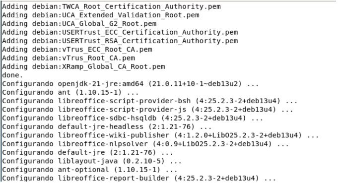
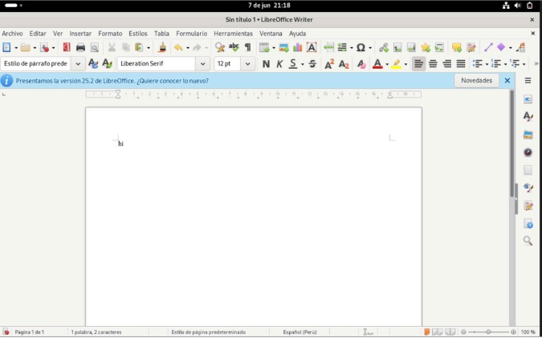
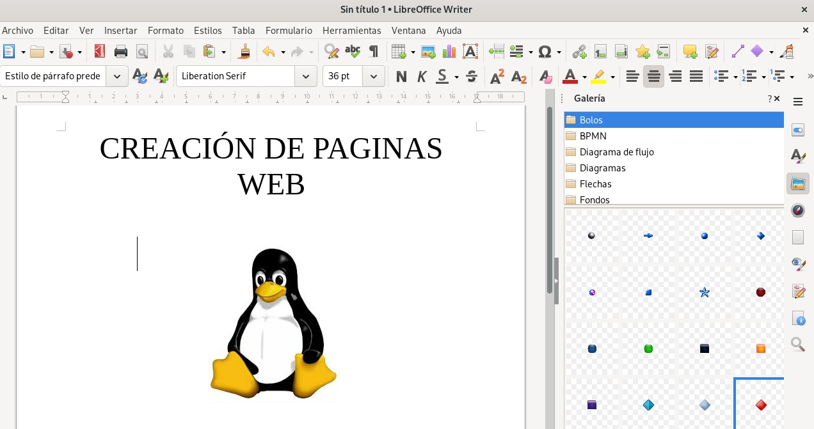

Manual de instalación, uso y características
En Linux no se utiliza Microsoft Office de forma nativa. En su lugar, se emplean suites ofimáticas como LibreOffice, que permiten crear documentos, hojas de cálculo y presentaciones.
La instalación se realiza mediante la terminal:
sudo apt update
sudo apt install libreoffice libreoffice-l10n-es
Captura 1: Instalación en terminal

Captura 2: Comprobación del sistema

Captura 3: Interfaz de LibreOffice Writer
LibreOffice se utiliza para tareas académicas y laborales como redactar documentos, realizar cálculos y crear presentaciones.

Captura 4: Ejemplo de uso en documento